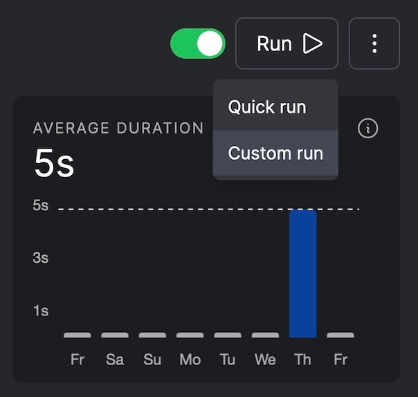
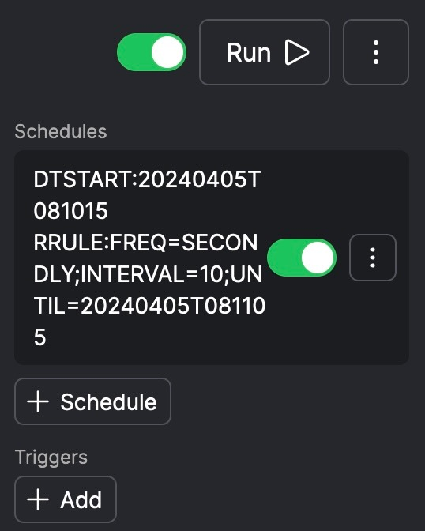
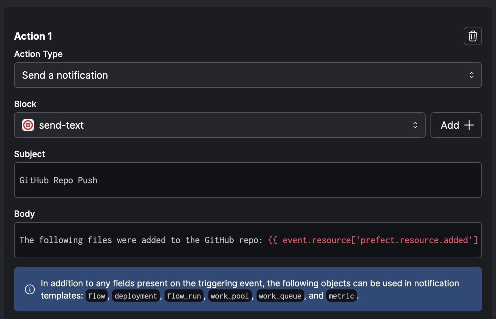

‘Serving’ Code to Prefect from Colab
(Why your code cells should be running until you manually click Stop!)
There’s a detail in terms of how Prefect’s UI actually accesses and runs the code you write in your Colab notebook cells that I totally failed to spend enough time talking about, and it’s leading to a lot of confusion towards the end of HW3, so I wanted to write this to clarify those details quickly in a way to let you finish HW3 as easily as possible!
Two Ways of Running Code
Up until this unit with Prefect and pipeline orchestration libraries, you really only had one way of writing and executing code:
- Write the code in a cell of an
.ipynbnotebook, then - Click the Run button (or Cmd+EnterCmd+Enter), and see what happens
(This is related to clicking the Render/Preview button, since you can think of that as a shortcut for running all the cells and combining the results into an HTML document)
In the first few questions, where we just ask you to write flows (consisting of a series of tasks), the code still runs in this way, so it seems like not much has changed, and that Prefect is just a fancy wrapper around the way you’ve run code before…
When you create a Prefect deployment, though (which is different from a flow, in an important way), the process is different, and it’s going to feel less intuitive at first because you won’t instantly see the results from running your code when you click the run button! Now the process of running your code will instead look like:
Write the code in a cell of an
.ipynb, where instead of calling the flow function in the normal way (likemy_flow()), you instead use Prefect’s special.serve()function (likemy_flow.serve())Save the code to a
.pyfile using the%%writefile <filename>.pycell magicRun the saved
.pyfile from a different code cell, using the%run <filename>.pycell magic, which:- Registers (or, “posts”) the deployment on Prefect Cloud, as a piece of code that you’d like to allow it to manage, and then
- Serves the flow as an ongoing process, meaning that it actually just sits and waits to be run externally!
Because of the way Step 3 works, now to actually execute the flow, you need to go into the Prefect UI and trigger the run of the code somehow: one way is to just click the “Run” -> “Quick run” button in the upper-right of the Prefect UI page for the Deployment, and another is to use “Run” -> “Custom run”:

An advantage to using “Custom run” is that you’ll be able to update the parameters to your flow before running it.
Then, at the end of HW3, you encountered a third way that the code can be run, that is, using a schedule. In the Prefect UI, if the schedule that you passed as an argument to
.serve()was parsed correctly, you should see the schedule details in a panel directly underneath the run button1:
So, to summarize:
- In a non-Prefect setting, your code lives in a notebook cell, waiting to be run. When you run the cell, the code is sent to the Python interpreter, and any outputs produced when it is interpreted are displayed underneath the code cell.
- In a Prefect setting, your code still lives in a notebook cell, but now when you run the cell (or, in our case, when you run the
.pyfile generated as a copy of the cell) it establishes a connection to Prefect Cloud, allowing the code to be triggered externally:- By clicking the “Run” button in Prefect’s UI,
- On the basis of a schedule, or
- Whenever some event occurs
The Power of Event Triggers
The last bullet point in the above summary, of running code whenever a given event occurs, is extremely powerful! I’m sad that it’s the one of those three options that we didn’t get to cover in HW3, but as an example you can think of the Dropbox auto-book-scanner pipeline I showed briefly in class. This pipeline works like:
- Updates to a Dropbox folder (files added, deleted, or modified) are trigger a webhook established from within Prefect’s UI
- This Prefect webhook is then set as the event trigger which runs the flow code.
- The Extract step of the flow code loads the files added to the Dropbox folder into Python’s memory
- The Transform step of the flow code runs these files through OCR software, turning PDFs into plaintext that NLP algorithms can work with
- The Load step of the flow code then adds the extracted plaintext into a MongoDB collection.
So, hopefully that example can “click” in your head why the data-processing pipeline setup is so powerful: rather than having to sit there and physically click run on your code to have it carry out some data science procedure, you can instead just write the code then tell Prefect to run it whenever something changes that would require re-running the procedure.
For example, if you happened to be the data scientist for a public opinion firm like Pew or Gallup, the non-Prefect way you might operate would be something like:
- One of the poll managers adds new poll data as a into a Dropbox folder as a
.csvfile - The poll manager then sends you an email like “Hey, new poll results are available, can you analyze them for me?”
- When you check this email (days later), you download the
.csvfile onto your computer, and use it as input to some code you’ve written that generates plots at the end, summarizing the results - You reply to the poll manager’s email, saying “Hey, here are the plots summarizing the results (attached)”
- Upon checking this email (yet more days later), the poll manager gives a thumbs-up, or they ask you to re-do the analysis using a different set of data…
Now, I hope you can see how literally this entire chain of events can be automated using Prefect! You can:
- Take your analysis and plot-generation function and add
@flowto the top of it, - Set it to run on the trigger “Dropbox folder modified”,
- Set it to place the plots into an Artifact (like we placed the wordcloud into our artifact in HW3), and
- Have this artifact auto-emailed to the poll manager upon completion (using the Automation tool within Prefect’s UI)
We didn’t get to see how the notifications work either (it would have been even messier to grade, unfortunately), but as a preview of how that works, here are the super-basic settings I have for an Automation I made to send me a text message (through Prefect’s built-in Twilio block) when certain important GitHub repos are pushed to:

Footnotes
Though, frustratingly, Prefect’s UI is set up so that, if your screen is too small, it instead places this information in a separate tab lower in the UI with the heading “Details”.↩︎